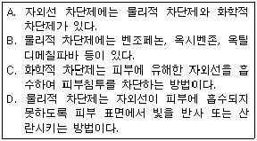

미용사(피부) (2011-04-17 기출문제)
1과목: 피부미용학
1. 클렌징 제품에 대한 설명이 틀린 것은?
- 클렌징 밀크는 O/W 타입으로 친유성이며 건성, 노화, 민감성 피부에만 사용할 수 있다.
- 클렌징 오일은 일반 오일과 다르게 물에 용해되는 특성이 있고 탈수 피부, 민감성 피부, 약건성 피부에 사용하면 효과적이다.
- 비누는 사용 역사가 가장 오래된 클렌징 제품이고 종류가 다양하다.
- 클렌징크림은 친유성과 친수성이 있으며 친유성은 반드시 이중 세안을 해서 클렌징 제품이 피부에 남이 있지 않도록 해야 한다.
(정답률: 77%)

2. 딥 클렌징의 효과와 가장 거리가 먼 것은?
- 모공의 노폐물 제거
- 화장품의 피부 흡수를 도와줌
- 노화된 각질제거
- 심한 민감성 피부의 민감도 완화
(정답률: 87%)
3. 팩의 제거 방법에 따른 분류가 아닌 것은?
- 티슈 오프 타입 (Tissue off type)
- 석고 마스크 타입(gysum mask type)
- 필 오프 타입(Peel off type)
- 워서 오프 타입(Wash off type)
(정답률: 69%)
4. 클렌징 시술에 대한 내용 중 틀린 것은?
- 포인트 메이크업 제거시 아이 립 메이크업 리무버를 사용한다.
- 방수 (waterproof)마스카라를 한 고객의 경우에는 오일 성분의 아이메이크업 리무버를 사용하는 것이 좋다.
- 클렌징 동작 중 원을 그리는 동작은 얼굴의 위를 향할 때 힘을 빼고 내릴 때는 힘을 준다.
- 클렌징 동작은 근육결에 따르고, 머리쪽을 향하게 하는 것에 유념한다.
(정답률: 83%)
5. 피부 분석표 작성시 피부 표면의 혈액순환상태에 따른 분류표시가 아닌 것은?
- 홍반피부(erythrosis skin)
- 심한 홍반피부(couperose skin)
- 주사성 피부(rosacea skin)
- 과색소 피부(Hyper pigmentation skin)
(정답률: 59%)
6. 신체 각 부위 관리에서 매뉴얼 테크닉의 효과와 가장 거리가 먼 것은?
- 혈액 순환 및 림프 순환 촉진
- 근육의 이완 및 강화
- 피부의 염증과 홍반 증상의 예방
- 심리적 안정감을 통한 스트레스 해소
(정답률: 79%)
7. 화장수의 도포 목적 및 효과로 옳은 것은?
- 피부 본래의 정상적인 pH 밸런스를 맞추어 주며 다음 단계에 사용할 화장품의 흡수를 용이하게 한다.
- 죽은 각질 세포를 쉽게 박리 시키고 새로운 세포 형성 촉진을 유도한다.
- 혈액 순환촉진 시키고 수분 증발을 방지하여 보습효과가 있다.
- 항상 피부를 pH 5.5 약산성으로 유지시켜 준다.
(정답률: 68%)
8. 피부 미용의 역사에 대한 설명 중 옳은 것은?
- 르네상스 시대 - 비누의 사용이 보편화
- 이집트 시대 - 약초 스팀법의 개발
- 로마시대 - 향수, 오일, 화장이 생활의 필수품으로 등장
- 중세시대 - 매뉴얼 테크닉크림 개발
(정답률: 75%)
9. 다음 중 피부 미용에서의 딥 클렌징에 속하지 않은 것은?
- 스크럽
- 엔자임
- AHA
- 크리스탈 필
(정답률: 66%)
10. 피부 유형을 결정하는 요인이 아닌 것은?
- 얼굴형
- 피부조직
- 피지 분비
- 모공
(정답률: 93%)
11. 매뉴얼 테크닉의 효과와 가장 거리가 먼 것은?
- 혈액순환 촉진
- 피부결의 연화 및 개선
- 심리적 안정
- 주름제거
(정답률: 86%)
12. 일시적 제모에 해당하지 않은 것은?
- 족집게
- 제모용 크림
- 왁싱
- 레이저 제모
(정답률: 92%)
13. 팩에 대한 내용 중 적합하지 않은 것은?
- 건성 피부에는 진흙팩이 적합하다
- 팩은 사용목적에 따른 효과가 있어야 한다.
- 팩재료는 부드럽고 바르기 쉬워야 한다.
- 팩의 사용에 있어서 안전하고 독성이 없어야 한다.
(정답률: 90%)
14. 카르테(고객카드)작성에 반드시 기입되어야 할 사항과 가장 거리가 먼 것은?
- 성명, 생년월일, 주소, 전화번호
- 직업, 가족사항, 환경, 기호식품
- 건강상태, 정신상태, 병력, 화장품
- 취미, 특기사항, 재산정도
(정답률: 91%)
15. 림프 드레니지의 주 대상이 되지 않는 피부는?
- 모세혈관 확장피부
- 튼피부
- 감염성피부
- 부종이 있는 셀룰라이트 피부
(정답률: 66%)
16. 안면관리시 제품의 도포 순서로 가장 바르게 연결된 것은?
- 앰플-로션-에센스-크림
- 크림-에센스-앰플-로션
- 에센스-로션-앰플-크림
- 앰플-에센스-로션-크림
(정답률: 76%)
17. 셀룰라이트(cellulite)에 대한 설명 중 틀린 것은?
- 오렌지 껍질 피부모양으로 표현된다.
- 주로 여성에게 많이 나타난다.
- 주로 허벅지, 둔부, 상완 등에 많이 나타나는 경향이 있다
- 스트레스가 주 원인이다.
(정답률: 78%)
18. 다리 제모의 방법으로 틀린 것은?
- 머슬린천을 이용할 때는 수직으로 세워서 떼어낸다.
- 대퇴부는 윗부분부터 밑 부분으로 각 길이를 이등분 정도 나누어 내려가며 실시한다.
- 무릎부위는 세워놓고 실시한다.
- 종아리는 고객을 엎드리게 한 후 실시한다.
(정답률: 67%)
19. 피부의 색소와 관계가 가장 먼 것은?
- 에크린
- 멜라닌
- 카로틴
- 헤모글로빈
(정답률: 49%)
20. 다음 중 땀샘의 역할이 아닌 것은?
- 체온조절
- 분비물 배출
- 땀분비
- 피지분비
(정답률: 71%)
2과목: 피부학 및 해부생리학
21. 피부 각질형성세포의 일반적 각화 주기는?
- 약 1주
- 약 2주
- 약 3주
- 약 4주
(정답률: 72%)
22. 콜라겐과 엘라스틴이 주성분으로 이루어진 피부 조직은?
- 표피 상층
- 표피하층
- 진피조직
- 피하조직
(정답률: 79%)
23. 어부들에게 피부의 노화가 조기에 나타나는 가장 큰 원인은?
- 생선을 너무 많이 섭취하여서
- 햇볕에 많이 노출되어서
- 바다에 오존 성분이 많아서
- 바다의 일에 과로하여서
(정답률: 90%)
24. 광노와 현상이 아닌 것은?
- 표피 두께 증가
- 멜라닌 세포 이상 항진
- 체내 수분증가
- 진피내의 모세혈관 확장
(정답률: 78%)
25. 피부의 천연보습인자(NMF)의 구성 성분 중 가장 많은 분포를 나타내는 것은?
- 아미노산
- 요소
- 피롤리돈 카르본산
- 젖산염
(정답률: 86%)
26. 표피에서 촉감을 감지하는 세포는?
- 멜라닌 세포
- 머켈 세포
- 각질형성 세포
- 랑게르 한스 세포
(정답률: 59%)
27. 우리 몸의 대사 과정에서 배출되는 노폐물, 독소 등이 배설되지 못하고 피부조직에 남아 비만으로 보이며 림프 순환이 원인인 피부 현상은?
- 쿠퍼로제
- 켈로이드
- 알레르기
- 셀룰라이트
(정답률: 90%)
28. 담즙을 만들어 포도당을 글리코겐으로 저장하는 소화기관은?
- 간
- 위
- 충수
- 췌장
(정답률: 73%)
29. 세포막을 통한 물질이동 방법 중 수동적 방법에 해당하는 것은?
- 음세포작용
- 능동수송
- 확산
- 식세포 작용
(정답률: 58%)
30. 중추 신경계는 어떻게 구성되어 있나?
- 중뇌와 대뇌
- 뇌와 척수
- 교감신경과 뇌간
- 뇌간과 척수
(정답률: 77%)
3과목: 화장품학
31. 다음 중 배부(back)의 근육이 아닌 것은?
- 승모근
- 광배근
- 견갑거근
- 비복근
(정답률: 57%)
32. 골격계에 대한 설명 중 옳지 않은 것은?
- 인체의 골격은 약 206개의 뼈로 구성된다.
- 체중의 약 20%를 차지하며 골, 연골, 관절 및 인대를 총칭한다.
- 기관을 둘러싸서 내부 장기를 외부의 충격으로 부터 보호한다.
- 골격에서는 혈액세포를 생성하지 않는다.
(정답률: 68%)
33. 다리의 혈액순환 이상으로 피부 밑에 형성되는 검푸른 상태를 무엇이라 하는가?
- 혈관 축소
- 심박동 증가
- 하지정맥류
- 모세혈관확장증
(정답률: 87%)
34. 남성의 2차 성장에 영향을 주는 성스테로이드 호르몬으로 두정부 모발의 발육을 억제시키고 피지분비를 촉진시키는 것은?
- 알도스테론(aldosterone)
- 에스트로겐(estrogen)
- 테스토스테론(testosterone)
- 프로게스테론(progesterone)
(정답률: 67%)
35. 고형의 파라핀을 녹이는 파라핀기의 적용범위가 아닌 것은?
- 손 관리
- 혈액순환 촉진
- 살균
- 팩 관리
(정답률: 63%)
36. 컬러테라피의 색상 중 활력, 세포재생, 신경긴장완화, 호로몬대사 조절 효과를 나타내는 것은?
- 주황색
- 노란색
- 보라색
- 초록색
(정답률: 60%)
37. 다음 중 전류와 관련된 설명으로 가장 거리가 먼 것은?
- 전류의 세기는 1초에 한 점을 통과하는 전하량으로 나타낸다.
- 전류의 단위로는 A(암페어)를 사용한다.
- 전류는 전압과 저항이라는 두 개의 요소에 의한다.
- 전류는 낮은 전류에서 높은 전류로 흐른다.
(정답률: 60%)
38. 브러시(프리마톨)의 사용 방법으로 틀린 것은?
- 브러시는 피부에 90도 각도로 사용한다.
- 건성, 민감성 피부는 빠른 회전수로 사용 한다.
- 회전속도는 얼굴은 느리게, 신체는 빠르게 한다.
- 사용 후에는 즉시 중성 세제로 깨끗하게 세척한다.
(정답률: 76%)
39. 피부미용기기의 부적용과 가정 거리가 먼 경우는?
- 임산부
- 알레르기, 피부상처, 피부질병이 진행 중인 경우
- 지성피부
- 치아, 뼈, 보철 등 몸속에 금속장치를 지닌 경우
(정답률: 67%)
40. 피부분석 시 사용하는 기기가 아닌 것은?
- pH 측정기
- 우드램프
- 초음파기기
- 확대경
(정답률: 83%)
4과목: 피부미용기기학
41. 다음 중 옳은 것만을 모두 짝지은 것은?

- A, B, C
- A, C, D
- A, B, D
- B, C, D
(정답률: 63%)
42. 화장품 제조의 3가지 주요기술이 아닌 것은?
- 가용화 기술
- 유화 기술
- 분산 기술
- 용융 기술
(정답률: 69%)
43. 에센셜 오일을 추출하는 방법이 아닌 것은?
- 수증기 증류법
- 혼합법
- 압착법
- 용제 추출법
(정답률: 54%)
44. 기능성 화장품류의 주요 효과가 아닌 것은?
- 피부 주름개선에 도움을 준다.
- 자외선으로부터 보호한다.
- 피부를 청결히 하여 피부 건강을 유지한다.
- 피부 미백에 도움을 준다.
(정답률: 74%)
45. 다음 중 향료의 함유량이 가작 적은 것은?
- 퍼퓸(Perfume)
- 오데 토일렛(Eau de Toilet)
- 샤워 코롱(Shower Cologne)
- 오데 코롱(Eau de Cologen)
(정답률: 75%)
46. 팩제의 사용 목적이 아닌 것은?
- 팩제가 건조하는 과정에서 피부에 심한 긴장을 준다.
- 일시적으로 피부의 온도를 높여 혈액순환을 촉진한다.
- 노화한 각질층 등을 팩제와 함께 제거시키므로 피부 표면을 청결하게 할 수 있다.
- 피부의 생리 기능에 적극적으로 작용하여 피부에 활력을 준다.
(정답률: 73%)
47. 화장품에서 요구되는 4대 품질 특성이 아닌 것은?
- 안전성
- 안정성
- 보습성
- 사용성
(정답률: 76%)
48. 통조림, 소시지 등 식품의 혐기성 상태에서 발육하여 신경독소를 분비하여 중독이 되는 식중독은?
- 포도상구균 식중독
- 솔라닌 독소형 식중독
- 병원성 대장균 식중독
- 보툴리누스균 식중독
(정답률: 66%)
49. 실내 공기의 오명지료로 주로 측정되는 것은?
- N2
- NH3
- CO
- CO2
(정답률: 83%)
50. 관련법 상 제2군에 해당하되는 감염병은?(관련 규정 개정전 문제로 여기서는 기존 정답인 2번을 누르면 정답 처리됩니다. 자세한 내용은 해설을 참고하세요.)
- 황열
- 풍진
- 세균성이질
- 장티푸스
(정답률: 43%)
5과목: 공중위생학
51. 예방접종에 있어서 디.피.티(D.P.T)와 무관한 질병은?
- 디프테리아
- 파상풍
- 결핵
- 백일해
(정답률: 61%)
52. 훈증 소독법에 대한 설명 중 틀린 것은?
- 분말이나 모래, 부식되기 쉬운 재질 등을 멸균할 수 있다.
- 가스(gas)나 증기(fum)를 사용한다.
- 화학적 소독방법이다.
- 위생해충 구제에 많이 이용된다.
(정답률: 52%)
53. 100% 크레졸 비누액을 환자의 배설물, 토사물, 객담소독을 위한 소독용 크레졸 비누액 100mL로 조제하는 방법으로 가장 적합한 것은?
- 크레졸 비누액 0.5mL + 물 99.5mL
- 크레졸 비누액 3mL + 물 97mL
- 크레졸 비누액 10mL + 물 90mL
- 크레졸 비누액 50mL + 물 50mL
(정답률: 67%)
54. 질병 발생의 3대 요소가 아닌 것은?
- 병인
- 환경
- 숙주
- 시
(정답률: 91%)
55. 화학약품으로 소독시 약품의 구비조건이 아닌 것은?
- 살균력이 있을 것
- 부식성, 표백성이 없을 것
- 경제적이고 사용방법이 간편할 것
- 용해성이 낮을 것
(정답률: 73%)
56. 손님의 얼굴, 머리, 피부 등에 손질을 총하여 손님의 외모를 아름답게 꾸미는 영업에 해당하는 것은?
- 미용업
- 피부미용업
- 메이크업
- 종합미용업
(정답률: 70%)
57. 변경신고를 하지 아니하고 영업소의 소재지를 변경한 때의 1차 위반 행정처분기준은?(관련 규정 개정전 문제로 여기서는 기존 정답인 3번을 누르면 정답 처리됩니다. 자세한 내용은 해설을 참고하세요.)
- 영업정지 1월
- 영업정지 2월
- 영업장 폐쇄명령
- 영업허가 취소
(정답률: 55%)
58. 이·미용업소에서 1회용 면도날을 손님 몇 명까지 사용할 수 있는가?
- 1명
- 2명
- 3명
- 4명
(정답률: 94%)
59. 위생교육은 일 년에 몇 시간을 받아야 하는가?
- 2시간
- 3시간
- 5시간
- 6시간
(정답률: 74%)
60. 다음 중 이·미용업무에 종사할 수 있는 자는?
- 공인 이·미용학원에서 3개월 이상 이·미용에 관한 강습을 받은 자
- 이·미용업소에 취업하여 6개월 이상 이·미용에 관한 기술을 수습한 자
- 이·미용업소에서 이·미용사의 감독하에 이·미용 업무를 보조하고 있는 자
- 시장·군수·구청장이 보조원이 될 수 있다고 인정하는 자
(정답률: 49%)